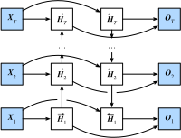

之前介绍的循环神经网络模型都是假设当前时间步是由前面的较早时间步的序列决定的，因此它们都将信息通过隐藏状态从前往后传递。有时候，当前时间步也可能由后面时间步决定。例如，当我们写下一个句子时，可能会根据句子后面的词来修改句子前面的用词。双向循环神经网络通过增加从后往前传递信息的隐藏层来更灵活地处理这类信息。图6.12演示了一个含单隐藏层的双向循环神经网络的架构。

下面我们来介绍具体的定义。 给定时间步$t$的小批量输入$\boldsymbol{X}_t \in \mathbb{R}^{n \times d}$（样本数为$n$，输入个数为$d$）和隐藏层激活函数为$\phi$。在双向循环神经网络的架构中， 设该时间步正向隐藏状态为$\overrightarrow{\boldsymbol{H}}_t \in \mathbb{R}^{n \times h}$（正向隐藏单元个数为$h$）， 反向隐藏状态为$\overleftarrow{\boldsymbol{H}}_t \in \mathbb{R}^{n \times h}$（反向隐藏单元个数为$h$）。我们可以分别计算正向隐藏状态和反向隐藏状态：
$$ \begin{aligned} \overrightarrow{\boldsymbol{H}}t &= \phi(\boldsymbol{X}_t \boldsymbol{W}{xh}^{(f)} + \overrightarrow{\boldsymbol{H}}{t-1} \boldsymbol{W}{hh}^{(f)} + \boldsymbol{b}h^{(f)}),\ \overleftarrow{\boldsymbol{H}}_t &= \phi(\boldsymbol{X}_t \boldsymbol{W}{xh}^{(b)} + \overleftarrow{\boldsymbol{H}}{t+1} \boldsymbol{W}{hh}^{(b)} + \boldsymbol{b}_h^{(b)}), \end{aligned} $$
其中权重$\boldsymbol{W}{xh}^{(f)} \in \mathbb{R}^{d \times h}$、$\boldsymbol{W}{hh}^{(f)} \in \mathbb{R}^{h \times h}$、$\boldsymbol{W}{xh}^{(b)} \in \mathbb{R}^{d \times h}$、$\boldsymbol{W}{hh}^{(b)} \in \mathbb{R}^{h \times h}$和偏差 $\boldsymbol{b}_h^{(f)} \in \mathbb{R}^{1 \times h}$、$\boldsymbol{b}_h^{(b)} \in \mathbb{R}^{1 \times h}$均为模型参数。
然后我们连结两个方向的隐藏状态$\overrightarrow{\boldsymbol{H}}_t$和$\overleftarrow{\boldsymbol{H}}_t$来得到隐藏状态$\boldsymbol{H}_t \in \mathbb{R}^{n \times 2h}$，并将其输入到输出层。输出层计算输出$\boldsymbol{O}_t \in \mathbb{R}^{n \times q}$（输出个数为$q$）：
$$\boldsymbol{O}t = \boldsymbol{H}_t \boldsymbol{W}{hq} + \boldsymbol{b}_q,$$
其中权重$\boldsymbol{W}_{hq} \in \mathbb{R}^{2h \times q}$和偏差$\boldsymbol{b}_q \in \mathbb{R}^{1 \times q}$为输出层的模型参数。不同方向上的隐藏单元个数也可以不同。